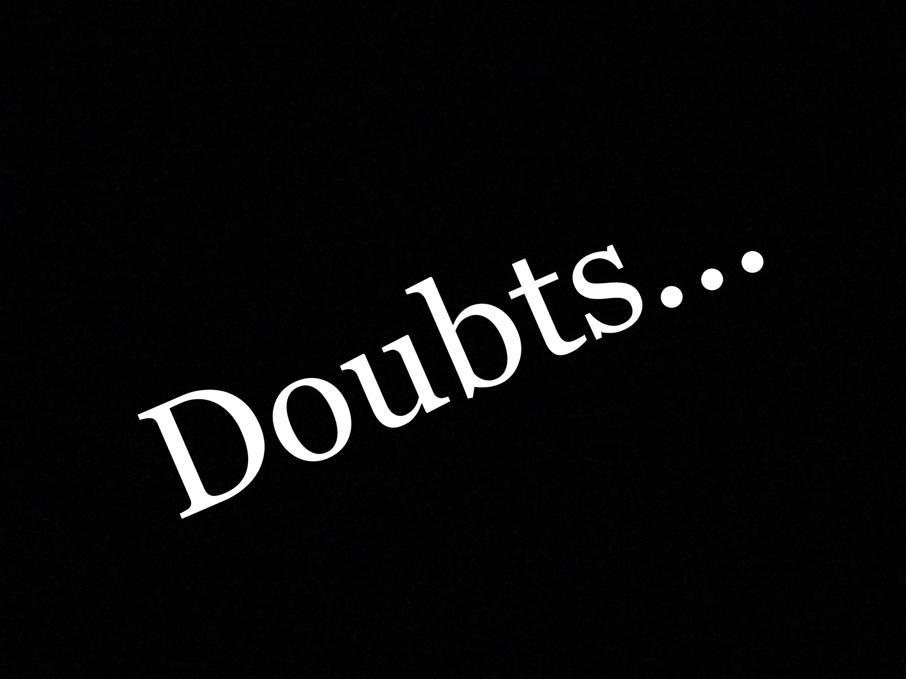

HOW BAD DO YOU WANT IT
Published by Nickolas Fuentes
April 18, 2017
Tonight I was going to go to bed after learning JavaScript from FreeCodeCamp. I was learning in the Algorithm section and was struggling on some of the projects. I was introduced to some new and old for loops, and some methods. I was looking up so much of the problems I had to look it all up and hated that I would run into the answer. As I would complete the project I would think to myself, how would I have ever thought of that and man I do not understand how this works. I would sit and stare at the problem and answer and be like man am I not up to the skill level for this section? I got down on myself and said Nick what are you doing trying to become a web developer you know you are not the smartest kid and all these algorithms how are you going to remember and learn them all. There is so much to learn Nick you know this is going to take forever to remember you wont get a job till a year or more from now at this rate! So I stopped and went to bed just thinking about all this.
As I laid in bed I told myself why did your start this what are your motives of pursuing this career path. First I did not like the career I got my degree in, the job growth for programming is astounding, but most of all I enjoyed creating something on the web that people can see all across the world. I produced a website to where people can see me and notice me strictly with just HTML and CSS from scratch with the basics. I did that with research and hard work and I never felt more accomplished in my life. I want a job I can support my future family, I want a job I can continue to challenge myself and grow and I want a job I can wake up to and be happy to go to.
So I got up out of bed at 3:18 am in the morning and decided to write this. Do not let the negativity and struggle discourage you from pursuing what you want. Be positive and keep your eyes on what you are focused on. I like to say you have to look at the big picture but take it piece by piece and learn to be patient.
I am not going to be another developer to give up on this and settle for an everyday job. This career has so much power and reward why give up? I am going to keep pushing till I get this down and become comfortable with it. If you made it down this far please do not give up on your dreams no matter what it is pursue with all your heart and live it.